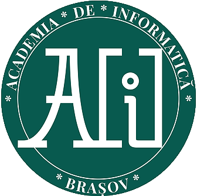

Echipa ROBOGETII de la Academia de informatica ia parte la un concurs de robotica "Animal Allies-First Lego League".Acest concurs are trei probe:
-Proba de Robotica
-Proba de valori fundamentale
-Proba de cercetare
La proba de certetare,echipa trebuie sa faca o inventie care sa ajute la interactiunea dintre om si animal.Deci,echipa ROBOGETII-lor nu numai ca a venit cu ideea,dar au si construit inventia lor. Aceasta inventie ajuta cainii foarte mult in timpul deplasarilor cu masina.ROBOGETII au inventat o pereche de ochelari pentru catei, care ii ajuta pe acestia sa nu mai vomite pe parcursul drumului parcurs cu masina.Acesti ochelari sunt facuti(momentan)din carton,iar in acestia se pune telefonul mobil pe care este incarcat un soft.Cu ajutorul acestui soft,animalele vad prin camera telefonului,doar 4 imagini (cadre,fps) pe secunda(Softul aplicatiei a fost facut cu ajutorul unor cercetari NASA).Animalul nu se va uita cu ambii ochi,ci doar cu unul . Acesta este ochiul drept.Ochiul stang se va uita la o hartiuta alb-maronie.Aceasta hartiuta este pusa acolo pentru a-l ajuta pe caine sa nu il doara ochii dupa folosirea dispozitivului.
Daca va place aceasta inventie,va vom ruga sa distribuiti si sa apreciati acest site,pagina noastra de facebook,dar si Academia de informatica.
